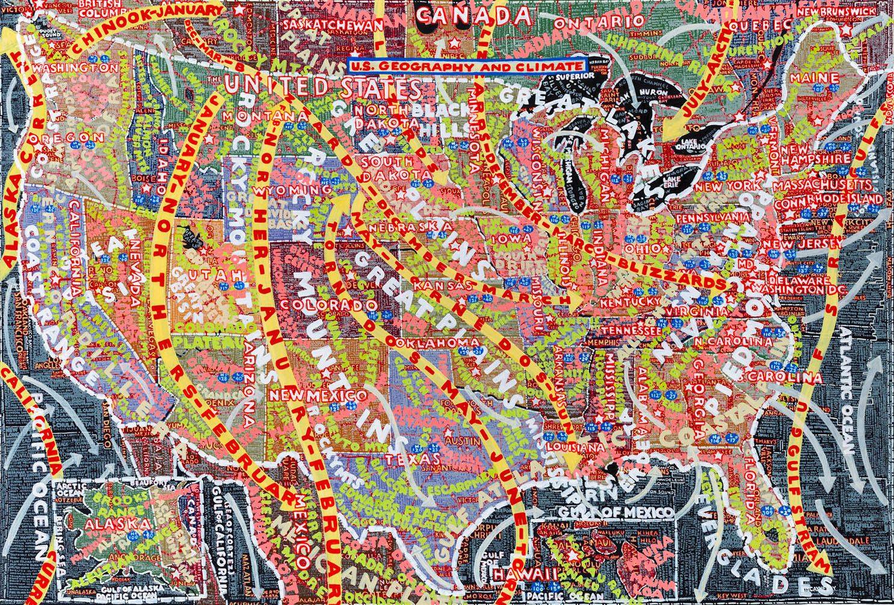
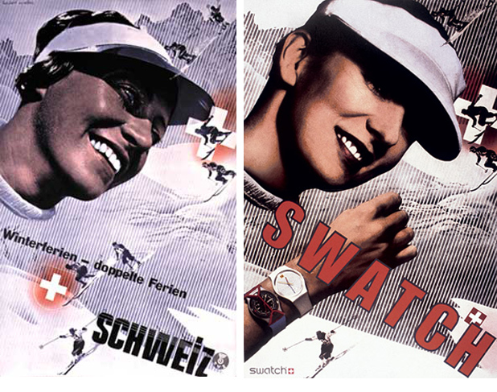
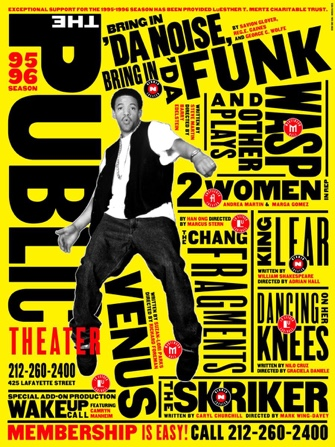

PAULA SCHER
Discuss how Paula Scher contributed to the world of Graphic Design

INTRODUCTION
Paula Scher is an American graphic designer who grew up in Philadelphia and Washington but was originally from Virgina and was born 6th of October 1948. Throughout the years Paula Scher had developed and broadened her experience within the design industry by pushing her boundaries into not just graphics but also painting, educating and becoming the first female principal at Pentagram in 1991 which is known for being the world’s largest independent design consultancy. Paula Scher’s work questioned the stereotypical approach to the design process of her time and this has lead to her becoming a huge contributor to Graphic Design over the last 30 years.
In my essay i plan to explore and explain the various stages throughout Paula Scher’s life that has affected and guided her on the road success within Graphic Design as well as discussing the various contributions her work has had on the Graphic Design industry as a whole. I will do this by first, going back to her childhood years to see where her original interest and ideas for design began which lead to her using them in a lifelong career in design.
I also plan to cover her various career moves which lead to one of her most notable achievement of becoming the first female principal at Pentagram and well as being recognised with more than 300 awards from international design associations, with her work being showcased in the Museum of Modern Art, the Library of Congress, the Museum für Gestaltung and the Centre Georges Pompidou. Paula Scher’s work is recognised globally as she developed and unique and eye-catching approach to design with illustrations and type however she is probably best known for her more recent work on large brand and identity projects such as Citibank, Windows 8, MoMA and The Metropolitan Opera in New York.
My focus is that by the end of this essay I will have successfully demonstrated and given examples of how Paula Scher is thought to be one to the leading contributors within Graphic Design.
“You have to be in a state of play to design. If you’re not in a state of play, you can’t make anything.”
WHO IS PAULA SCHER?
From a young age, Paula Scher was intrigued by the concept of design, starting as a child by creating simple drawings as a way of expressing herself as well as using it as a way to clear the mind and set herself free. These habits and feelings followed her into her adult years as she would still express how she finds drawing and painting therapeutic and uses it as a way of escaping reality from time to time.
Scher pursued her passion for art and design in the Tyler School of Arts in Elkins Park Pennsylvania and it was her she established her unique style of creating design using typography as illustration due to her lack of strength in drawing at this stage in her life. However Scher showed signs of promise in her younger years that she would later become a successful designer as she would talk of how in her high school years she would have taken weekend art classes at Corcoran College of Art and Design to further her skill set and interest as well as making all the poster advertisements needed for the school’s events.
During her time in the School of Arts, she experimented using many mediums but it wasn’t until she discovered Graphic Design in her junior year that she felt she’d found her niche. In graphic design she was taught the important skill of problem solving which involved her questioning layout, shape, form and visual messaging which lead to her creating many abstract pieces of work. Stanislaw Zagorski was Scher’s tutor at the time she found her true passion for design as he helped guide her towards her distinctive style of creating imagery using type when she showed signs of frustration in her illustration major. It wasn’t until 1970 that Paula Scher qualified with a Bachelors in Fine Art from the Tyler School of Arts.
Strangely there were no other artists within Scher’s family and her mother and father were both skeptical of the idea of her attending art school as her father was a photogrammetric engineer who constructed all the government maps and her mother insisted on Paula completing a qualification that allowed her to teach before taking a leap of faith in the design industry. Her father’s work in maps influenced Paula’s work in her later years when she focused on creating fine art pieces in 1990 using type that developed into a series which were then compiled into a book called Maps in 2011 as each painting became well known due to their controversial approach with the extreme amount of information included that was relatable to the overload of information presented globally on a daily basis in the news and on social media.
HER WORK
Once she graduated, Paula Scher focused on getting into the design industry by uprooting her life to New York City where she successfully got accepted for a new job as a layout artist for Random House’s children’s books division which was the starting point of her new career. After a period of time with Random House, Paula started a job in a bigger company known as CBS Records within their advertising and promotions department where she stayed for two years before moving to Atlantic Records where she designed her first album cover as an art director. After gaining the experience she needed to further her career, Paula Scher returned to CBS Records to an art director position and she contributed to this company for a further 8 years.
It was during this time that Paula Scher grew the courage she needed to believe she could work independently and in 1982 she did just that. From that moment on, Scher flourished in contributions to the design industry with developing her unique typographic design solution approach which was loosely based of inspiration she gathered from the Art Deco period as well as the Russian Constructivism.
“Type has spirit. Type doesn’t have to be this clean mechanical thing that is simply doing its job. It can be this marvelous thing to engage with.”
Shortly after Scher went out on her own within her career, she partnered up with a past fellow Tyler School of Arts graduate, Terry Koppel and they worked alongside one another for 7 years. During this time, Scher broadened her creative bracket by contributing to packaging design, book jackets, advertising, identities and even her highly thought of ‘Swatch’ poster.
However when the recession hit the USA, the two designers parted ways and Scher went on to gain the role of her dreams, first female principal in Pentagram design consultancy in 1991.

During her time working for Pentagram, Paula Scher was the main contributor to the biggest turnaround in brand identity in 1994 when she was the first designer to create and brand a new identity for the highly known Public Theatre. In order to appeal to the audience members the theatre wanted to catch the attention of, Paula Scher came up with a street art design solution that all members of the public could associate with and relate to. Her work for this project included poster designs, billboards and even stationary. Paula completely refurbished the entire look for The Public Theatre in order to boost popularity as with its outdated designs from a former designer who’d passed, the atmosphere for the theatre could also be described as lifeless. Her designs created for The Public Theatre were big and bold with the name of the building the most eye catching feature and this approach was taken by Paula Scher to draw in an audience and with her typographic design, her work was easily seen as fresh and new.Scher’s work for The Public Theatre continued up to 2008 as they introduced a series known as the New York Shakespeare Festival in Central Park in which Paula designed and created numerous posters to represent.

“You’re not changing somebody, you’re making them a more perfect vision than when you started.”
Paula Scher has gone on to create numerous designs for other big events in New York such as for The Museum of Modern Art, The Metropolitan Opera and the New York City Ballet. Each of these projects further and broadened Paula Scher contribution to graphic design. Scher has worked on many rebranding project but one of her most recent projects was designing the Windows 8 logo in 2017 which took the design back to its original roots of being a window. In my opinion, Paula Scher’s work could be related to the popular saying, “less is more” in terms of her design approach but her contributions to the design industry as a whole is so much more.

HER CONTRIBUTION
Other than all the pieces of work Paula Scher has aided in or created throughout the years, whether that be through her career or her contribution to fine art, she was also an educator. In 1992 she taught design for the School of Visual Arts and she has been influencing, guiding and enlightening the youth of New York's creatives over the past 20 years throughout a variety of well established colleges and universities such as Yale, Cooper Union and even at her old college, Tyler School of Art.
Paula Scher became an inspiration for many who were interested in growing and developing their knowledge in design, including myself. Her work has contributed to the many changes in outlooks at how to problem solve within the design industry but also for those studying and she is regularly quoted due to her relatable and honest answers about her career.
CONCLUSION
To conclude, having researched and examined Paula Scher’s work from the beginning of her career to her most recent contributions to the graphic design world, I established that she has not only became an important influencers within the industry but one of the leading contributors in changing it. Paula Scher still works for Pentagram where she continues to work on new projects but she is also still an educator, writer and artist and contributing every day. This is how I conclude her contribution to graphic design.